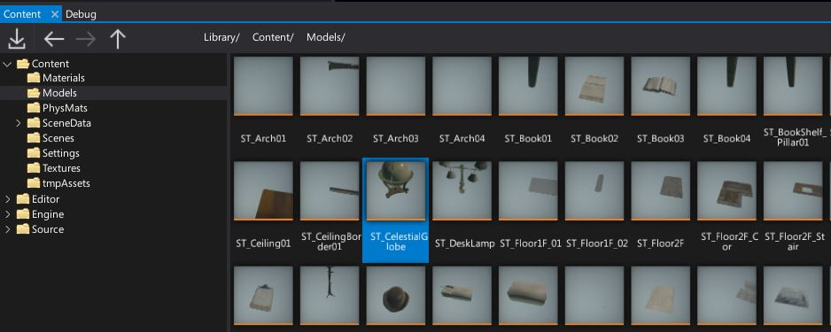

Searching Assets
There are several ways in Editor to search and find assets.
Content Window

Content Window displays your project assets and scripts. It's the main tool to navigate around project files and managed the workspace. It contains full directory content tree for project, engine and any referenced plugin projects.
Both folders hierarchy and the content view contain Search input field on top which can be used to filter the items by name. You can also use View -> Filters menu to select one or more item types to display. This can be usefull when working with a specific asset type eg. textures.
Asset Picker
Asset Picker is an editor control for asset reference properties. It displays the currently selected asset and can be used to change the value. By using dropdown arrow you can open the popup dialog which displays the list of all assets that can be assigned to the property and allows to filter them by name (use search field).
Content Finder
All Editor windows (except Game window) have keyboard shortcut Ctrl+O that opens the Content Window tool. It's project-wide search tool which supports navigating to all assets, all scripts, all actors and more. After opening it simply start typing the name of the thing you want to view or edit.
Also, you can use special tags to filter search results:
:<type>- filters the items by typename. For example:cube:texturewill show all textures that containcubein a name,:scenewill show all scenes.
Content Finder shortcut the be configured in Editor input options.
Reference Viewer
Asset References Viewer is an in-built tool for displaying graph of assets referencing given asset and assets referenced by that asset. To use it simply right-click on an asset in a Content Window and select opton Show asset references graph. It will display the graph with direct references between the assets. It can be used to analyze the project content. For instance, you can find all textures used by a given model asset to verify their quality or texture group.